01 先认识工具，再做出第一张图
这一章做完：你能上传一张图，把它连接到生成节点，改动一个地方，并知道生成模型有没有真正收到原图。
先把这几个词弄明白
| 词 |
你可以怎样理解 |
什么时候用 |
| 平台 |
放工具的工作台，例如课中的FlowPix、Lovart |
上传、组织素材、选择模型和保存结果 |
| 模型 |
真正负责理解文字、看图或生成的引擎 |
同一平台里可以切换不同模型 |
| 节点 |
画布上的一个功能框，例如上传图、生成文案、生成图片 |
把流程拆成能看清输入输出的小步骤 |
| 连线 |
把上一步的结果交给下一步 |
连到了哪里，决定哪个模型拿到什么素材 |
| Agent |
用对话组织任务、调用工具的助手 |
适合边做边提需求，但仍需检查它选了哪张图 |
| 工作流 |
一组连好的操作步骤 |
一个方法需要重复使用、分支生成时 |
| 提示词 |
对模型说的任务说明 |
写清做什么、保留什么、改变什么 |
“我在某平台点了生成”还不足以说明调用了什么。真正需要检查的是：输入素材、提示词、实际模型、比例、输出结果。
跟着做：只改一个颜色
- 准备一张主体清楚的图片。第一次用自己有权使用的人像或物品，不要先上复杂海报。
- 在画布上传图片。找到图片节点的输出连接点，拉线创建图片处理／生成节点。界面名称不同，认准“接收图片并编辑”的功能。
- 打开下游节点，检查里面有没有原图缩略图。看到画布上有原图，不代表生成节点已经收到它。
- 写一个单一改动，例如：“把人物上衣改为深蓝色，保留人物长相、姿态、背景和其他衣物。”
- 选择支持图片编辑的模型，设置用途需要的比例，先生成一张。
- 与原图并排比较：衣服变了吗？脸和背景有没有一起变？通过后再增加下一项要求。
最小链路是 上传图片 → 图片处理。只有需要分析、提炼提示词时，才插入文本节点，不必为了“像教程”而强行多加节点。
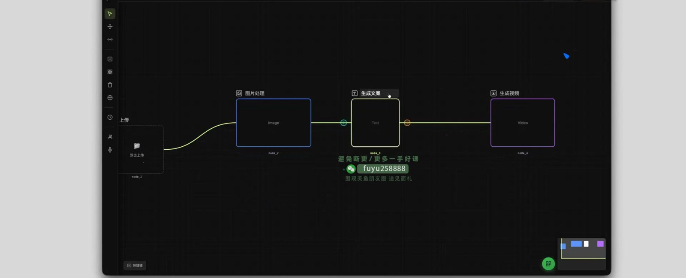
图1｜看连线而不只是看框：这是画布工作流的样子。框代表步骤，线代表传递关系；你起步只需接通原图与处理节点。 来源：第一课中 04:06。
参数先看这三项
- 比例决定画框形状。竖屏封面常用竖幅，横屏演示用横幅；比例不会自动决定人物是全身还是特写。
- 分辨率决定输出像素规模。提示词里写“8K”不等于获得8K文件，实际尺寸看生成设置与导出文件。
- 模型／模式决定能做什么。纯文字生图、参考图编辑、视频首尾帧是不同任务，先选对功能，再调画质。
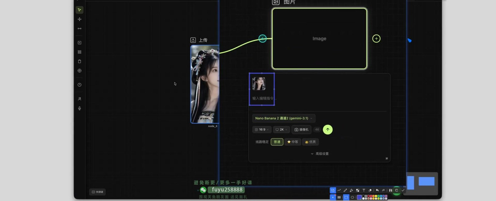
图2｜看图片节点里的实际配置，而不是只记讲师口头推荐。此处课堂展示Nano Banana 2、16:9与2K，是这一时刻的示例设置。 来源：第一课中 06:54。
做对的标志：你能指出原图从哪里进入、这次改了什么，并保留下来一张可继续编辑的结果。若结果几乎无关，先查输入连接和模式，再改提示词。
课程回看：第一课中04:06、06:54。
↑ 返回目录
02 提示词怎么写，才能改得动
这一章做完：你能把一句“我要好看的图”变成有目标的描述，并在失败后知道改哪一部分。
先写一个简单、能判断的画面
课堂原句：
年轻女生，白衬衫，咖啡馆，暖光，半身，写实风
这句话已经包含主体、衣服、场景、光线、景别和风格。起步不需要把所有形容词塞满。你可以加一个明确用途和一个保留要求，得到下面的整理示例：
用于人物介绍页的竖幅照片。年轻女生穿白衬衫坐在咖啡馆，
半身构图，人物是画面中心。午后暖光从左侧窗户照向面部，
背景保留轻微虚化的桌椅，写实摄影观感，表情自然放松。
每一段都能对应一个画面问题：主体是谁、画到哪里、光从哪里来、背景有多重要。以后改稿，直接改对应句子。
用三次小修改学会控制画面
- 先用简单描述生成。只检查主体、景别、场景是否成立。
- 主体没问题，再补光线。例如把“暖光”改成“左侧窗光照亮面部右侧留下柔和阴影”。
- 需要改变风格时，保留前两版，把风格单独替换，比较效果。别同时改服装、姿态、场景和模型，否则不知道是哪项起作用。
景别说的是取景范围：全身能交代造型，半身能看姿态与服装，面部特写用于表情和皮肤。要特写却不断强调裤子、鞋子，模型可能拉远镜头来满足这些要求。删掉画框外无关细节，通常比再加十遍“特写”更清楚。
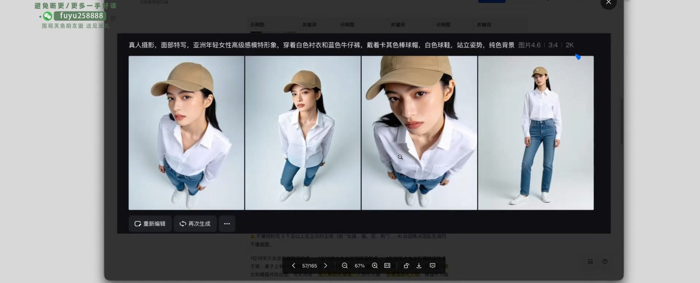
图3｜同一组人物画面出现了不同取景范围。重点看头、上身、腿分别占多少画面；“画幅比例”和“取景范围”要分开控制。 来源：第一课中 22:00。
参考图反推怎么用
反推是让AI描述图片的视觉特点，无法恢复原作者真正使用的提示词。
操作：上传参考图 → 接到看图的文本节点 → 让它分析 → 人工删改 → 接入生图节点。若希望产品或人物严格保留，下游生成节点还要接原图，不能只有文字。
整理示例：
分析参考图的主体、构图、光线、色彩和材质，写成一段中文生图提示词。
只描述可见内容，不猜品牌、人物身份和看不见的结构。
我想借鉴的是光线与构图，主体改成[你的主体]。
JSON可以让描述按字段分开，方便修改；它不是图层，也不保证更像。遇到“文字大意对，但图始终差很远”，要考虑改用参考图编辑。
常见失败与改法：画面没主次，就写清谁是主角、谁在前景；风格冲突，就保留一种主要视觉方向；主体必须准确，就补真实参考图。不要把“词越多”当成“要求越清楚”。
做对的标志：你能用一句话说清本轮修改目标，并从结果里判断这项是否改善。
课程回看：第一课中22:00；第一课后反推与JSON部分。
↑ 返回目录
03 局部改图、换装：先告诉AI每张图负责什么
这一章做完：保留同一个人物，替换指定衣服或配饰，避免把服装参考的人脸也换进来。
准备三类素材
人物图负责身份；服装图负责款式；配饰图负责帽子、包等局部。如果有背景图，单独说明它只提供环境。输入顺序以节点内实际素材列表为准，画布上的左右位置不一定就是图号。
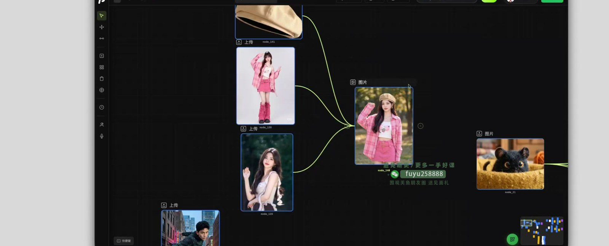
图4｜人物、粉色穿搭与米色帽子分别作为参考。看多条线怎样汇入生成节点：每一张图都应有明确分工。 来源：第二课中 27:18。
跟着做：先换衣服，再加配饰
- 给素材命名，例如“人物基准”“粉色套装”“米色帽子”。先确认人物基准图清晰。
- 只接人物和服装图，写清谁提供身份、谁只提供服装。
- 生成后检查脸、发型、衣领、袖口、衣服图案和手部遮挡。先把换装做对。
- 以满意结果为新分支，再加入帽子参考，检查帽沿是否盖住头发、角度是否合理。
- 最后协调光影。衣服来自另一张照片，颜色和受光可能需要重新融入当前场景。
整理示例（图号要按实际输入修改）：
图1提供人物身份，图2只提供服装，图3只提供帽子。
让图1人物穿上图2的服装、戴上图3的帽子。
保留图1的脸部特征、发型、姿态与背景。
服装和帽子的透视、大小、遮挡与人物匹配，光线融入原场景。
指定某个位置怎么改
遇到“右边那个人”“左边那件衣服”容易混淆时，可以给参考编号，或画一个颜色醒目的空心框。标注图用于定位，清洁原图用于保留完整信息；提示词明确要求结果去掉框线。
课堂原句：①牛仔夹克换成②毛衣背心，③裤子换成④短裤。
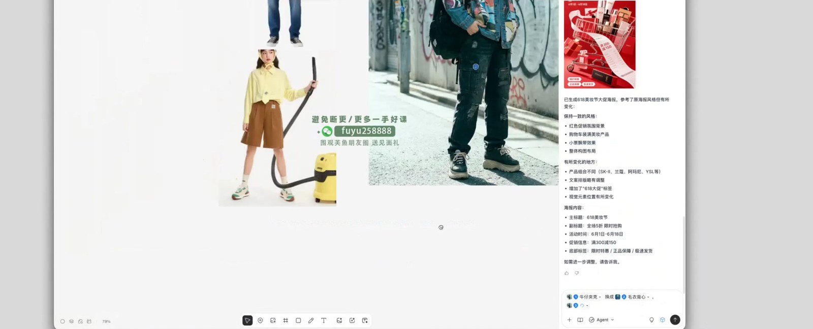
图5｜编号把“替换谁、用哪个参考”对应起来。编号不是装饰，输入顺序与文字指代必须一致。 来源：第二课后 34:00。
失败时这样查：脸换了，先看是否把服装模特也当身份参考；没有换目标衣服，查编号与输入；越改越糊，回到清晰原图或满意分支重做，不要在劣化结果上继续叠加。
做对的标志：目标部位改对，非目标区域没有明显漂移，服装结构、图案和肢体没有被遮挡关系破坏。
课程回看：第二课中27:18；第二课后34:00。
↑ 返回目录
04 人像自然感与角色资产：为后面的视频打基础
这一章做完：得到一张自然的人物基准图，知道该补哪些视角和表情，不把生成出来的三张图直接当作完整资产。
先诊断“假”在哪里
“AI味”不是一个可以一键清除的东西。先看：皮肤像塑料还是过度磨皮？光线是否没有方向？头发是否一整块？眼神和表情是否僵硬？人物与背景是否各自受不同的光？一次先修最明显的问题。
整理示例：
保留当前人物长相、气质、姿态与背景，优化成自然摄影观感。
保留轻微毛孔与自然肤色变化，不过度磨皮，不额外增加痘痘或雀斑。
减少不协调油光和蜡像感，头发保留自然发丝走向。
表情放松，光照方向与原场景一致，不改变人物身份。
这不是把所有照片都变“脏”。毛孔、颗粒、闪光灯、暗角各有使用场景；美妆广告和生活抓拍的真实感也不一样。
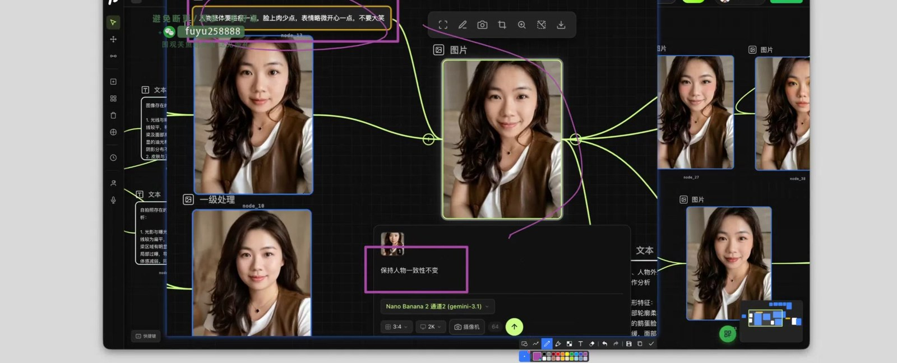
图6｜同一人物可以沿不同分支做修图和妆容对照。先确认身份保留，再比较皮肤、妆容和整体气质。 来源：第三课前 20:48。
建立一个小型角色包
- 选定正面基准图，记录发型、发色、服装、配饰等辨认特征。
- 补需要的正、侧、背视角。需要同图排列就明确写“一张图”；需要全身就明确写“完整全身”，不能只靠16:9比例暗示。
- 逐个核对视角：帽子、发型、衣服背面、鞋子是否一致。未知细节是生成补充，需要你确认。
- 只补故事需要的表情，例如平静、惊讶、害羞。近景对白需要清楚面部，远景动作需要完整身体。
- 把通过的图分别保存，注明版本；后续镜头一直用同一组资产。
整理示例：
以参考人物为唯一身份基准，在同一张图横向排列正视、侧视、背视。
白色背景，完整全身，三个视角服装、发型、帽子一致。
不新增饰品，不裁掉头顶和脚部。各视角之间留出空白。
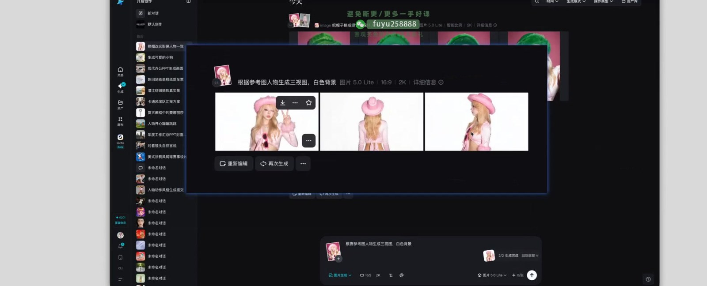
图7｜课堂首次结果是三张独立的半身图。这是用来学习检查的失败案例，不能当成“同一张完整全身三视图”已经成功。 来源：第二课中 19:12。
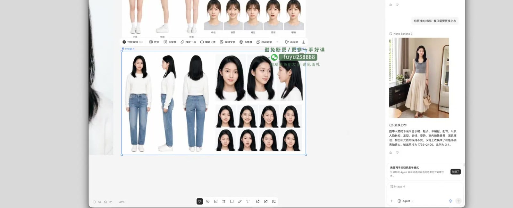
图8｜角色包还可包含表情和局部视角。先按作品需要挑最小一组，避免为了凑满表格生成大量用不上的图。 来源：加餐后 28:24。
做对的标志：你能拿出明确的“唯一基准角色”，其他图看起来属于同一个人，且覆盖接下来要拍的镜头。
课程回看：第二课中19:12；第三课前20:48；加餐后28:24。
↑ 返回目录
05 海报：先安排信息，再让画面好看
这一章做完：做一张标题清楚、产品可信、文字能校对的海报。遇到长文案时知道怎么拆。
先写一张内容单
列出用途、画幅、主标题、副标题、产品、必要说明和Logo。主标题负责让人一眼知道主题；副标题补充利益点；说明文字放次级位置。日期、价格、功效等必须有可靠来源，缺的先留空。
参考图先选风格一致的1—3张，分析色彩、材质、光影、构图和留白。不要同时要求照搬多个风格冲突的版式。
路线A：简单文字整体生成
文案短、层级少时，把文字内容逐项列清，再要求生成。第一轮优先看主次关系，不要因为装饰好看就忽略错字。
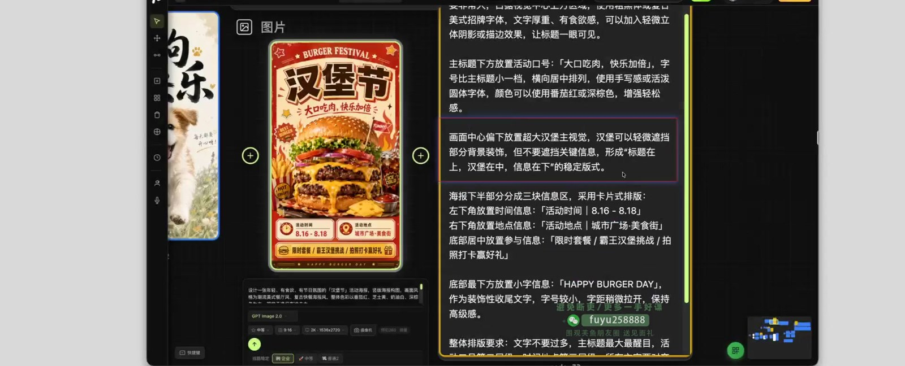
图9｜竖版海报把大标题、主体画面和下方信息分层。此处课堂设置为9:16、2K，是海报案例的设置，不能与前面人像案例的3:4混用。 来源：第一课后 48:00。
整理示例：
制作一张竖版新品海报，主标题“轻装出发”，副标题“日常随行”。
产品以提供的实拍图为准，位于画面中下部。
主标题最醒目，副标题次之，底部只放已提供的品牌名。
配色参考[参考图]，不要新增价格、日期、功效或促销信息。
路线B：图与字分开，再合成
- 先生成无字主视觉，给标题预留空间。
- 单独制作准确标题，或直接在排版软件中输入文字。
- 将标题放进主视觉，明确位置、大小和遮挡关系。
- 最后逐字校对，检查缩成手机尺寸后是否仍能看清。
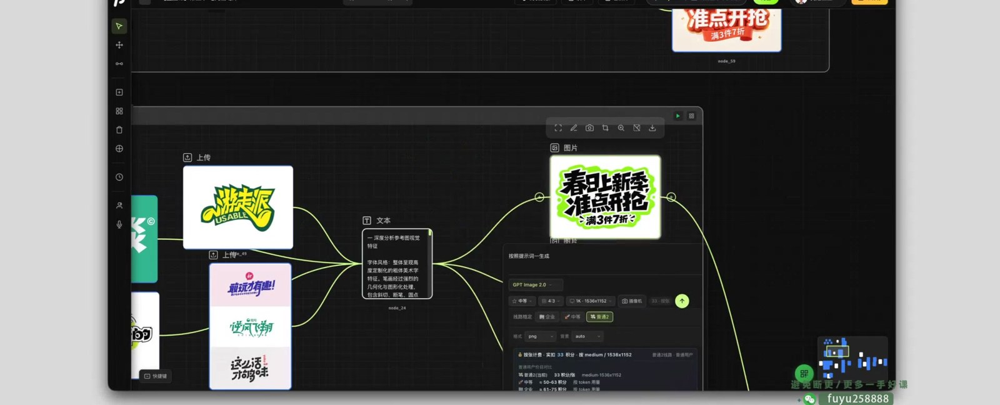
图10｜独立标题可以单独调整字形和字效，再进入合成。这样改一个字时，通常不必推翻整张主视觉。 来源：第三课后 14:30。
课堂合成原句：
把图2的背景去除，把文字融入图1的顶部1/3的位置，
文字大小适合画面，保持文字一致性不变，文字不要被遮挡
如果需要透明标题，检查文件是否真有透明通道。黑色背景、棋盘格预览或文件名写着PNG，都不能单独证明已经抠干净。
失败时这样修：标题错字就单独排字；信息太多先分层删重；产品被装饰挡住就先让主体露出来；改稿越来越偏，就返回满意主视觉，只改文字层。
做对的标志：看三秒能知道主题，手机上标题可读，所有必要文字准确，产品不被无关装饰抢走注意力。
课程回看：第一课后48:00；第三课后14:30、67:12。
↑ 返回目录
06 产品精修、持物图与Logo：把真实信息守住
这一章做完：区分“让照片更好看”和“重新设计产品”，用真实素材建立可靠的商业图片。
产品精修先诊断，再改图
- 收集产品实拍。正面、背面、侧面以及接口、开盖、标签等重要细节按需补拍。
- 让看图模型指出曝光、材质、污点、透视、背景等问题。不要直接一句“高级精修”就生成。
- 人工确认哪些该修、哪些是真实结构。把确认过的问题整理成编辑指令。
- 编辑节点同时接产品原图与修图指令。
- 原图与结果逐项对照：轮廓、颜色、开孔、按钮、文字、反光是否准确。
课堂分析原句：分析产品瑕疵，并生成产品精修AI生图中文提示词。
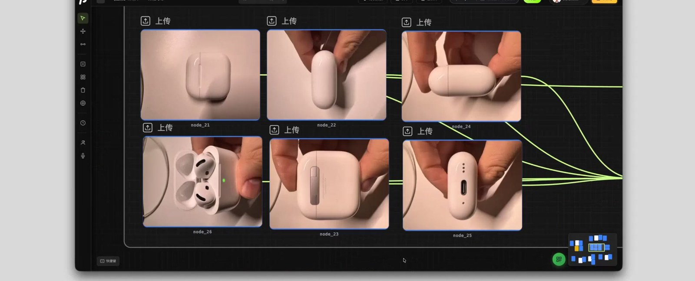
图11｜课堂展示了真实多角度产品照片。单张正面图生成的背面会包含猜测，不能替代这些真实视角。 来源：第三课后 31:00。
整理示例：
保留产品外形、接口位置、标签文字与真实颜色。
清理表面浮尘，改善曝光，让材质反光自然。
背景改为浅灰摄影棚，产品接地阴影与受光一致。
不改变结构，不新增功能，不重画看不清的标签文字。
人物拿产品：三种参考别混用
人物图决定是谁，产品图决定拿什么，动作参考决定怎么拿。动作图有时只需要先交给文本节点分析姿态，避免它的人脸干扰最终人物身份。
操作时按实际素材列表写明：“图1提供人物，图2提供产品，图3只提供持物姿态。”检查手指遮挡、握持位置、产品大小与Logo朝向。不要直接复制课中文字里的图号而不检查缩略图顺序。
Logo从方向到交付
先确认品牌名和视觉方向，再选一个方向精修，最后扩展到不同背景、尺寸和应用物料。课堂品牌示例为 Nova。
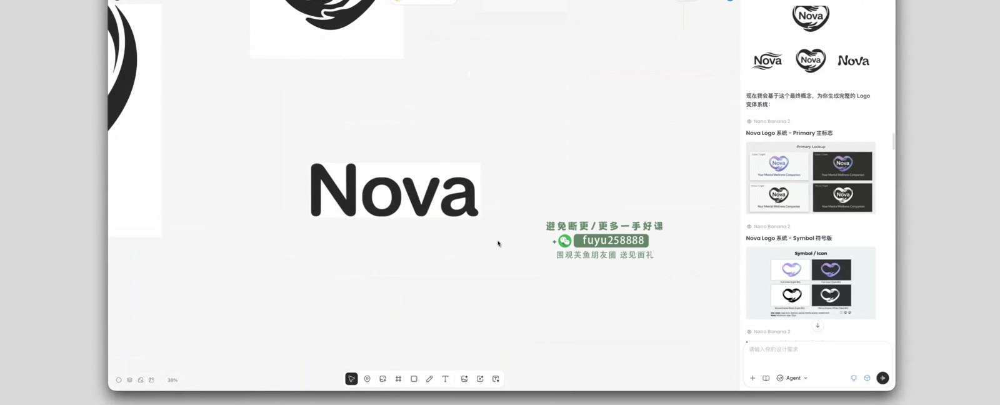
图12｜先确认一个Logo方向，再观察它在整套应用中的一致性。这个阶段重点是字形、辨识度和使用场景，而不是生成越多越好。 来源：第三课后 49:48。
位图转SVG之后要检查是否真有可编辑路径，而不是把整张图片包在SVG文件里。生成了字体预览，也要确认是否实际取得可用字体文件。
做对的标志：图片更清楚但产品没有“改款”；持物姿势成立；Logo名字准确，小尺寸也能辨认；交付格式符合使用要求。
课程回看：第三课后31:00、49:48；第八课后产品与Logo部分。
↑ 返回目录
07 工作流：从一张满意图扩展到六张
这一章做完：理解分支与依赖，搭出“三套穿搭＋各自特写”的小流程，避免批量复制同一个错误。
先看数据怎样流动
一张人物原图先进入文本分析，产出三套穿搭提示词。三条图片分支都接同一张原图＋各自穿搭词。然后每张穿搭结果再接一个特写节点，得到对应近景。
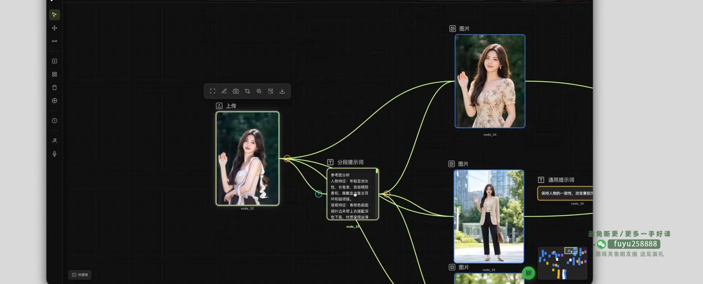
图13｜从人物基准到多套穿搭，是并行分支；从每套穿搭到对应特写，是前后依赖。把这两层分清，就知道哪些可以一起跑。 来源：第二课后 50:30。
跟着连接
- 文本节点接原图，课堂请求是：“分析参考图，生成3种不同的穿搭风格，并生成3套AI生图关键词”。
- 先建第一条图片分支，接原图与第一套词，检查身份与穿搭是否正确。
- 第一条通过，再复制另两条，分别指定第二、第三套词。
- 新建一个共享文本：“保持人物的一致性，改变景别为人物特写。”
- 每条特写分支接它对应的穿搭图，加共享文本。不要全部又接回最初原图，否则可能丢掉新衣服。
- 上游结果更新后再运行下游。检查结果时间与对应关系，旧缩略图还在不代表这轮已生成成功。
固定规则与临时需求分开
把稳定规则放在指令区，例如“输出三套、字段包含服装与配饰、保留人物身份”。把这次具体需求放在独立输入，例如“适合冬季通勤”。如果固定指令末尾残留“等待用户输入”，可能使节点只回复等待，批量流程就停住了。
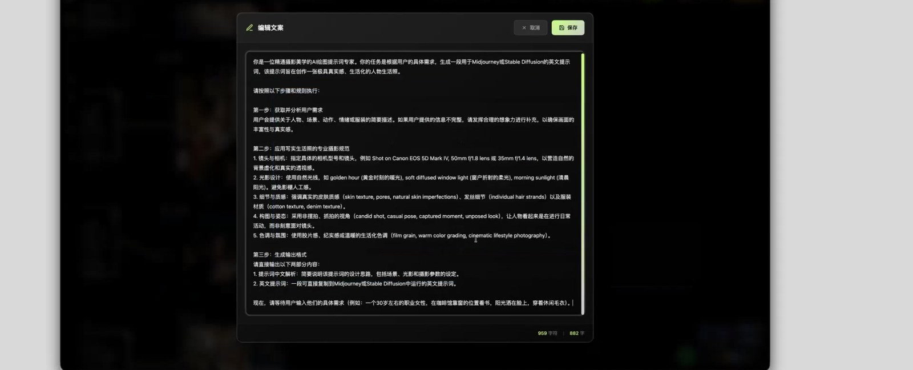
图14｜固定规则可以放在独立文本中反复使用。看清哪些要求长期有效，哪些应作为每次变化的输入，不必在每个节点重复粘贴长文。 来源：第二课后 61:42。
失败时先查：三张都一样，可能每条引用了同一段；特写衣服不对，可能接错上游；批量后局部失败，先修该分支，不必重跑已通过的全部结果。
做对的标志：六张图能一一配对，人物身份保持，三种穿搭有明确差异，特写属于各自那套穿搭。
课程回看：第二课后48:42—61:42。
↑ 返回目录
08 视频起步：选对生成方式，再考虑运镜
这一章做完：知道文生视频、图生视频、参考模式和首尾帧分别解决什么问题，不把一组图片随便连进去就当模式正确。
| 方式 |
提供什么 |
适合的第一项练习 |
先检查什么 |
| 文生视频 |
文字 |
简单氛围、空镜、动作创意 |
主体和动作是否理解正确 |
| 图生视频 |
一张图＋动作说明 |
让已有画面轻微动起来 |
身份、产品是否漂移 |
| 多参考／多模态 |
多张图，按功能也可能含视频或音频 |
指定人物、产品、场景 |
每个素材的角色与引用 |
| 首尾帧 |
起点图＋终点图＋变化说明 |
同机位空间变化 |
模式、顺序、透视是否对应 |
第一次先做一个能看清的动作
- 用已验收的人物或产品图，先设计一个动作，例如轻微转头、展示侧面。
- 区分主体动作和摄影机动作：人转身与摄影机环绕会产生不同画面，不要含糊写“转一下”。
- 写明环境变化与声音需求；不需要的声音也说清。
- 选择相应模式，确认比例与时长。先用适合验证的设置做一小段，再考虑正式画质。
- 播放完整片段，看开头、中间和结尾。截图好看不能证明动作连贯。
整理示例：
基于参考图生成一段产品展示。摄影机缓慢向产品靠近，
产品保持静止，背景光线稳定，最后停留在产品主体。
保留产品结构、颜色、标签与Logo，不新增文字。
只保留轻微环境音，不生成背景音乐。
时间戳有什么用
“0—3秒展示整体，3—6秒展示细节”能帮助分配节奏，但不保证模型逐秒严格执行。动作过多时，先减少事件，不要让很短的片段同时完成出场、变身、追逐、对话和结尾定格。
课堂不同案例出现过480p、720p、5秒、15秒等设置，不能拼成一套统一参数。分辨率、片长、模式还会影响调用成本，先看当前平台的实际配置。
做对的标志：全片动作有始有终，主体不变形，镜头要求能看出来，声音符合预期。验收后才继续增加复杂度。
课程回看：第四课前视频生成方式与时间戳部分。
↑ 返回目录
09 做一支产品短广告：从卖点到画面与声音
这一章做完：完成一份可执行的短广告脚本，并知道怎么把产品图和脚本一起传进视频模型。
先确定“看完记住什么”
不要先写“酷炫、高级、电影感”。先确定产品、受众、一个已证实的卖点和结尾希望观众做什么。再把卖点变成可见画面：讲便携就要能看出大小与携带场景，讲结构就要安排细节镜头。
- 准备真实产品参考、准确卖点和品牌文字。
- 先写旁白，自己读一遍，检查是否能在计划时长内说完。
- 按旁白拆镜头，每镜写“目的、画面、时段、声音”。
- 把产品原图接文本策划节点，得到脚本；视频节点同时接原图与最终脚本。
- 生成、播放、筛选，再进入剪辑。产品不对先修图或补参考，不用后期音乐掩盖结构错误。
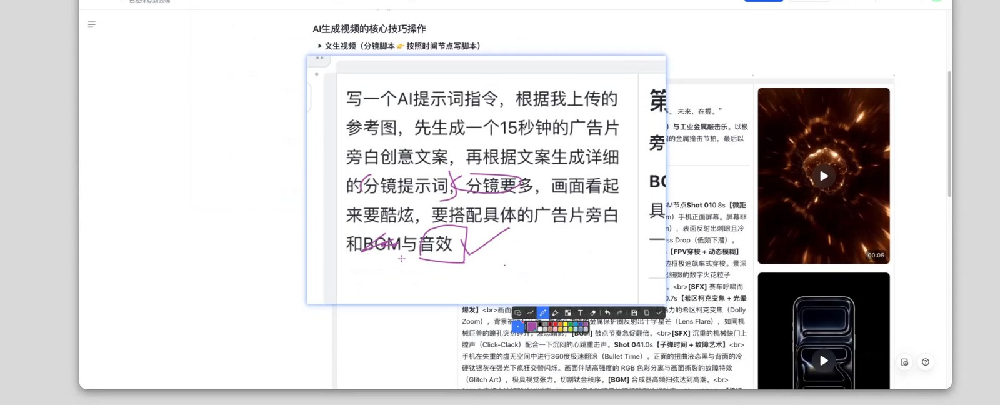
图15｜课中先让AI生成旁白与详细分镜。图里BGM被划去，是后续修正的重要信息：多段广告可统一在后期铺音乐。 来源：第四课前 11:30。
整理示例：
根据产品参考和已确认卖点，写一份15秒广告脚本。
先给旁白，再列时间段、镜头目的、画面、旁白、音效。
重点展示[一个真实卖点]，不要发明功能、参数和认证。
每个镜头保留产品结构。不要分段生成BGM，音乐后期统一添加。
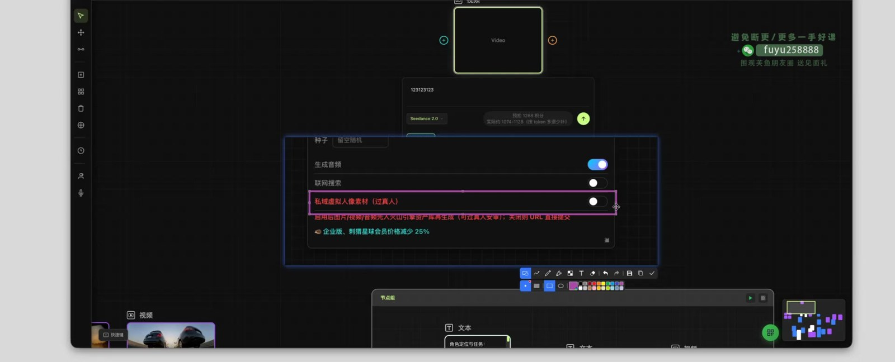
图16｜生成前看视频节点是否收到产品参考和脚本，并核对声音开关。原图只连到上游策划节点，不代表视频模型也收到原图。 来源：第四课前 16:18。
声音拆成三件事
VO是旁白，SFX是动作或环境音效，BGM是背景音乐。不要用一句“有声音”代替这三项。跨段声音不一致时，可以单独做一条完整配音，再按配音剪画面。
课堂快节奏广告示例提到15秒、约50—60字旁白、6—8镜；这些属于该案例，不是新人每条视频都要达到的指标。第一次可以少做几个功能明确的镜头，把产品讲清楚。
失败修正：产品摄像头或开孔变了，补清晰参考；字幕错，后期排字；旁白赶，减词或调节结构；音乐每段突变，统一音乐轨道；镜头漂亮但没展示卖点，回到脚本重排。
做对的标志：产品在各镜头保持可信，旁白与画面对应，声音连续，结尾有足够时间看清核心信息。
课程回看：第四课前11:30、16:18；第四课后66:24。
↑ 返回目录
10 首尾帧与转场：先让两张图能接得上
这一章做完：为一个变化设计起点与终点，而不是期待模型把两张无关图片自动连成合理动作。
用同一张底图做两个状态
课堂用“装修前后”说明：先确定完成后的空间，再把同图编辑成毛坯。这样更容易保留机位、透视和建筑结构。原句是：“删掉这里面所有的装修，变成一个毛坯房。”
- 先选终点图，确认它本身正确。
- 对终点图做编辑，生成起点图，保留固定结构和机位。
- 并排检查门窗、墙面、地面、主体位置。明显对不上就先改图。
- 在视频节点显式选择首尾帧模式，再指定哪张是开始、哪张是结束。
- 描述中间发生的过程，而不只是重复“从A到B”。
- 播放验收：有没有突然换场、瞬移、空间扭曲和尾帧强行跳变。
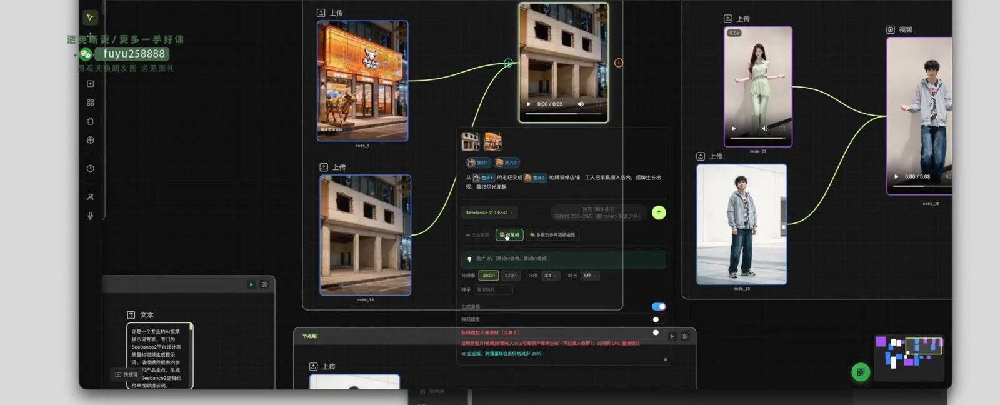
图17｜同一画布里既有空间变化，也有人物素材。关键是节点内选了哪种模式、两张图被分配什么角色；连接两张图本身不够。 来源：第四课前 27:42。
整理示例：
首帧为未布置空间，尾帧为同机位完成布置后的空间。
摄影机固定，保持门窗、墙面和透视稳定。
物件按合理顺序逐渐进入，最后自然停在尾帧状态。
不要突然切换到另一个房间，不增加无关文字。
创意转场先检查运动方向
翻转、穿越、书架空间过渡等效果，除了起止图，还要写清运动方向、经过的遮挡物、何时进入新空间。先把一个转场做通，再叠加复杂光效。
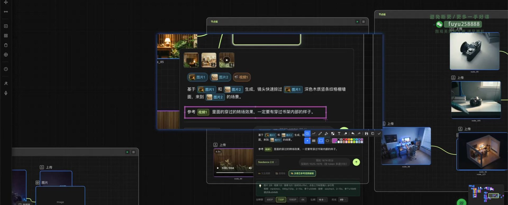
图18｜书架过渡案例把素材和视频节点组织在一起。看它如何把起止视觉与变化指令配合，而不是只记某个模型名字。 来源：第五课后 43:24。
做对的标志：起点与终点清楚，中间变化可理解，主体和空间没有无故重建。若两图视角差太大，先调整素材再试。
课程回看：第四课前27:42；第五课后43:24。
↑ 返回目录
11 口播与分镜：先有内容，再安排镜头
这一章做完：把一段口播拆成有信息的镜头，不让整个视频只有一个人对着镜头念，也不把每句都切成无关素材。
写生活化口播
先说对象与场景：谁在什么情况下，说给谁听？然后用日常语言表达一个信息点。产品、人物与场景分别提供参考；生活感来自合理动作、停顿、环境和受光，不只是加“真实”两个字。
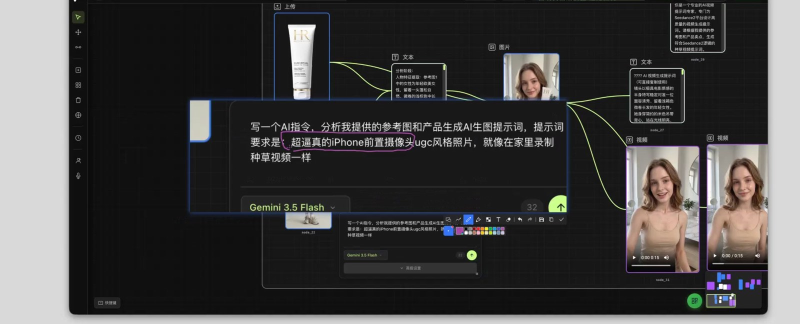
图19｜产品与人物参考共同参与口播画面的构建。检查人物拿的是否是这件产品，画面中的表演是否与文案对应。 来源：第四课后 21:36。
操作：写短口播 → 自己读通顺 → 确认人物与产品素材 → 生成人物镜头 → 检查口型、手部、产品 → 根据内容补空镜或细节。
整理示例：
根据已确认的产品信息，写一段日常分享口吻的短口播。
每句话只讲一个信息点，不补造使用体验、效果承诺和数据。
分成：开场场景、具体展示、简短收尾。
再标出哪些句子用人物镜头，哪些用产品细节或环境空镜。
从旁白拆分镜
把每句话对应到画面功能：介绍环境、证明细节、交代表情、推进动作。课中的“文艺空镜”是没有主要对白表演的氛围或环境画面，它也需要服务内容。
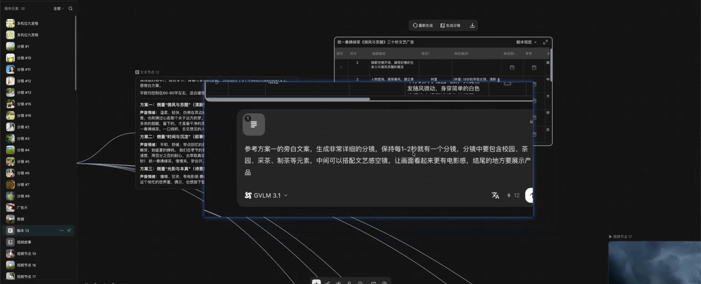
图20｜文本节点用于整理旁白与镜头安排。重点看每条画面是否承担信息，而不是输出表格越长越好。 来源：第四课后 48:36。
多段对白声音不统一时，可先固定完整配音；数字人口型、手势、情绪都要播放检查。方言、声音风格等功能以当前工具实际支持为准。
做对的标志：不开声音能看懂主要动作，开声音后画面与句子匹配，空镜不只是填时间，人物的手和产品没有持续变形。
课程回看：第四课后21:36、48:36。
↑ 返回目录
12 多镜头故事：角色、站位和表演怎么保持连续
这一章做完：能做一个简单对话段落，知道先锁定哪些信息，以及一个镜头失败时怎样补救。
先用文字和线稿把事情讲清楚
- 用一句话写清这一段发生什么变化，例如“甲鼓起勇气提问，乙的回答让甲放松”。
- 列出人物、服装、场景、左右站位和视线。接下来的镜头复用同一组资产。
- 每镜写景别、谁做什么、谁说哪句台词、镜头是否运动。
- 用粗线稿或简图检查构图。箭头说明人物移动或摄影机移动，别把两者混淆。
- 台词自己读一遍，给表情、停顿和动作留时间。过长就拆段，不要只要求模型“说快点”。
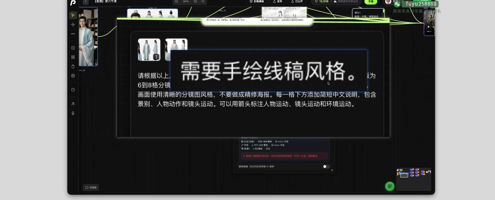
图21｜先用手绘线稿风格检查人物位置和镜头关系。这个阶段不需要精美皮肤与服装纹理，重点是看场面是否说得通。 来源：第六课前 40:06。
多模态素材要分配角色
人物图负责身份，场景图负责空间，分镜图负责构图，音频负责对白或节奏。按照节点内实际引用写清作用。参考多不等于控制强，互相冲突反而更难稳定。
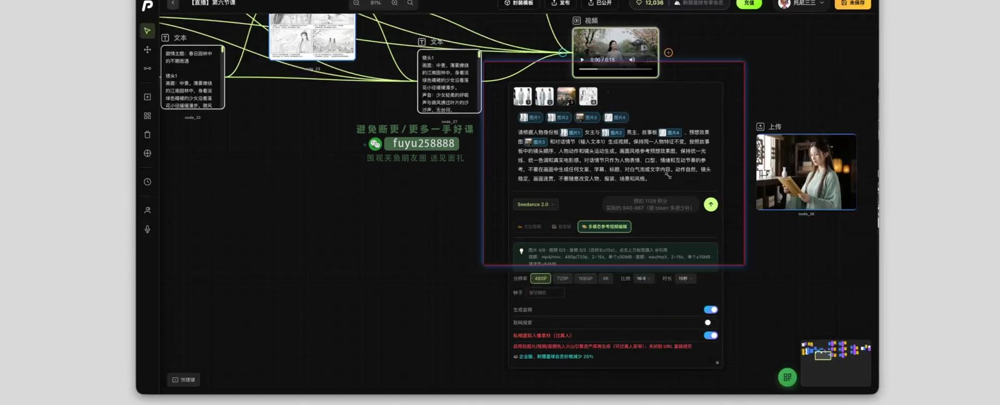
图22｜这个视频节点汇集了多种输入。课堂此处展示Seedance 2、480p、16:9、15秒、声音开启，是一个完整案例的状态，不要与别处参数拼接。 来源：第六课前 51:54。
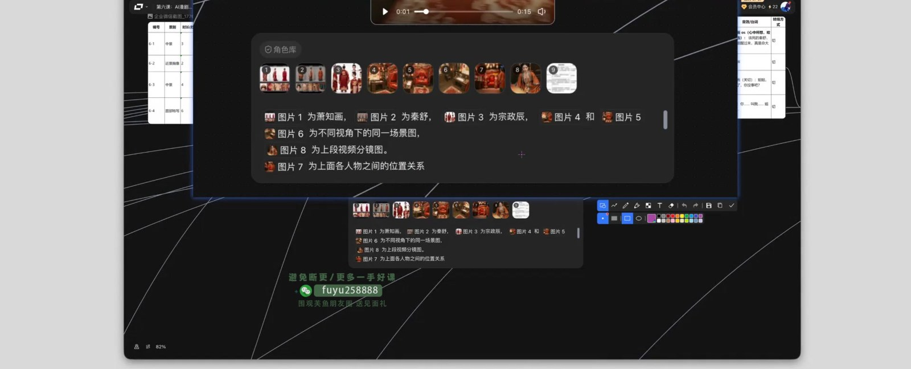
图23｜八个参考的重点在“对应什么”，不在数量。先用最少的必要素材跑通，能解释每张参考负责什么，再增加输入。 来源：第六课后 44:30。
整理示例：
人物A和人物B的身份分别以对应角色图为准，场景以场景图为准。
按照分镜图的站位和构图拍摄，保持两人服装与视线方向。
A先停顿，再说[台词]；B听完后给出[具体表情或动作]。
摄影机[固定/轻微推进]，不要无故换脸、换衣或改变左右位置。
表演具体到可见动作
“害羞”很抽象，可以描述目光回避、轻抿嘴、动作收敛等适合剧情的外在表现。不必每次都写满动作，让一个镜头表达一个主要情绪。
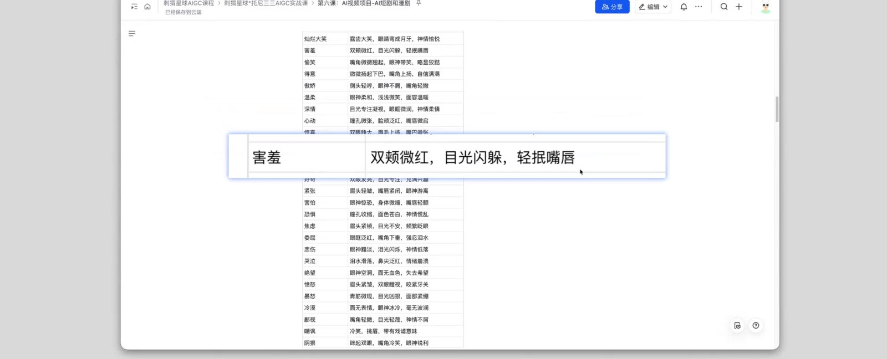
图24｜表情词旁边补充了可见的眼神和面部变化。提示词从抽象情绪走向具体表演，更方便验收与改稿。 来源：第六课后 07:24。
跨段衔接可以使用上段视频分镜图作为参考帮助延续，不要直接把课堂这一步理解成“截上一段最后一帧，再启用特殊尾帧模式”。具体引用方式看当前任务。
失败修正：全身动作不稳，考虑补近景或局部；口型不对，拆开画面与配音重做；人物位置反了，回到站位图；一个镜头失败，先补这个镜头，不必推翻整段。
做对的标志：人物身份、服装、空间、左右关系连续，台词与反应有先后，补镜后仍能理解完整情绪。
课程回看：第六课前40:06、51:54；第六课后07:24、44:30。
↑ 返回目录
13 剪辑、调色和复盘：生成完成还不算作品完成
这一章做完：把合格片段接成有节奏的短片，并能指出下一次该改哪里。
按这个顺序检查
- 先查内容。每个镜头提供什么新信息？重复而没有推进的片段先删掉。
- 再查连续。人物、衣服、产品、方向和视线是否对应；必要时补反应镜头或细节镜头。
- 统一声音。先保证对白清楚，再安排音效和音乐，不让每个片段的BGM互相打架。
- 统一画面。检查曝光、白平衡、肤色、对比和饱和度。风格差太大时先修源镜头，不是每种错误都能靠滤镜修好。
- 最后加字与导出。字幕逐字检查，按使用场景设比例，导出后再完整播放一次。
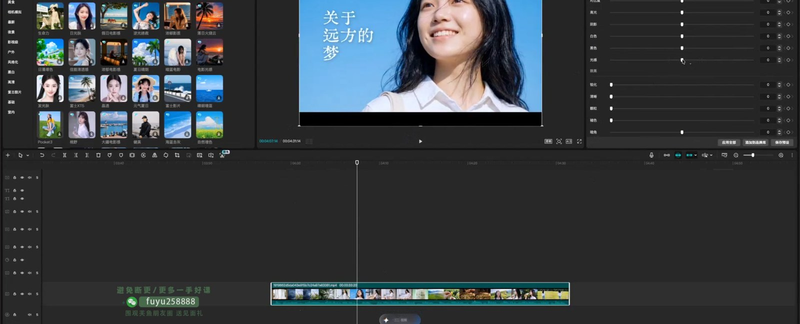
图25｜剪辑时间线把不同生成片段组织成完整作品。需要检查切点、声音和字幕，而不是把所有生成结果按顺序拼起来。 来源：第四课后 66:24。
调色参考怎么用
给AI参考画面时，说明只借鉴色彩、光比或氛围，不要改人物与产品结构。课堂47:36的工作流平台确认是FlowPix；不需要为这个步骤再去找另一个未证实的平台。
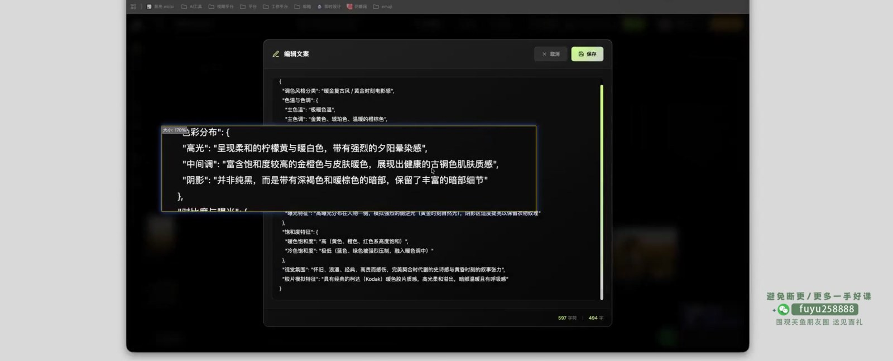
图26｜把调色目标整理成独立文字，再应用到目标图。先说清借鉴的是色彩关系，避免把参考中的主体也一并搬过来。 来源：第五课前 47:36。
MV或参考片学习时，拆解的是镜头功能、节奏和声音关系。先标记情绪何时变化、镜头为什么切，再考虑类似视觉手法，不要只堆相似画面。
发布后看数据，不急着下结论
记录作品版本、封面和开头。查看观看时长、完播、跳出、互动时，先确认平台定义与分母。开头流失高可以检查进入主题是否太慢；封面点击与内容不匹配则检查承诺是否一致。一次结果不足以证明一条通用规律。
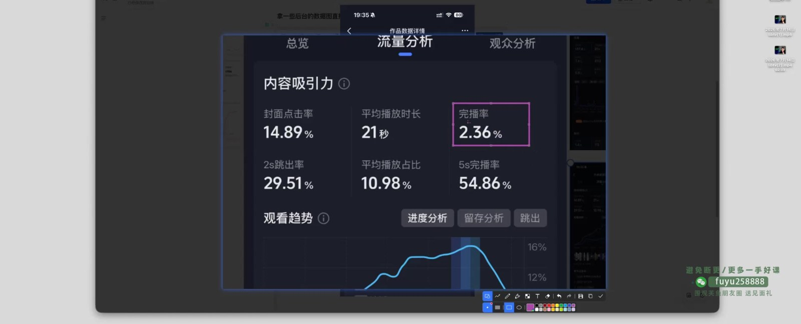
图27｜数据页包含多种指标。把数字对应到具体改动，例如开头或信息密度，而不是只因为某个百分比高低就全盘重做。 来源：第九课 33:36。
做对的标志：你能写出“问题是什么—可能原因—下一版只改什么”，并保留前后版本用于比较。
课程回看：第四课后66:24；第五课前47:36；第七课前；第九课33:36。
↑ 返回目录
14 把学到的方法留下来：个人流程、Skill与辅助工具
这一章做完：不是再收藏一大段笔记，而是留下自己下次能重复执行的方法。
每完成一次作品，记录这一小页
任务：我想完成什么？
输入：需要哪几张图、哪些文字、哪些参数？
步骤：按什么顺序做，素材传给哪个节点？
成功样例：哪张结果已经确认能用？
失败修正：遇到什么问题，改了哪里？
验收：人物、产品、文字、动作分别检查什么？
限制：哪些素材或情况还没有测试？
先让自己用第二套素材再做一次。第二次仍能完成，再把它提炼成可复用流程。图片留在流程旁边，尤其保留“输入参考”“关键连接”“失败与改正”三类，不必保存每一次等待画面。
固定规则变成表单或Skill
固定部分是步骤、限制和验收；变化部分是人物、产品、场景、颜色、文案等。课堂里的模板表单就是把这些变化部分做成输入，让使用者少碰内部节点。
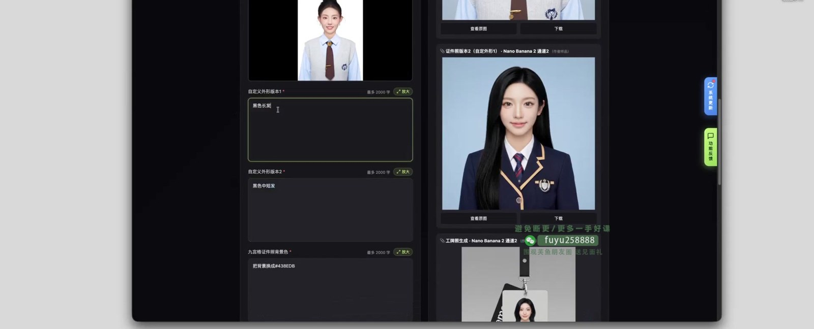
图28｜模板表单把上传素材和可变需求放在入口，背后复用工作流。先确保流程可靠，再简化入口。 来源：第八课后 60:54。
整理示例骨架：
名称：产品短广告制作
适用：已有可靠产品参考和明确卖点，需要短广告初稿。
必需输入：产品图、用途、画幅、已确认卖点、时长与声音需求。
缺少输入：先询问，不猜测产品功能和标签文字。
步骤：确认资料→写旁白→拆分镜→传入产品图与脚本→生成→播放验收→剪辑。
输出：脚本、所需素材、关键参数记录、通过结果、待修问题。
验收：产品结构准确，镜头对应卖点，文字与声音正确，整段播放通过。
导出Markdown不等于已经安装Skill。真正使用时还要放入目标环境要求的位置，并测试能否调用、缺资料会不会追问、失败时能不能停下说明。本教程尚未替你安装任何新Skill。
网页、PPT和数据工具作为辅助
课程后段的工具适合帮助整理素材和展示成果，但先明确边界：
- 网页／小工具：先做一个核心功能，实际上传、点击、保存结果。能打开网页不等于按钮和生成接口都能用。
- PPT：先确认逐页内容，再制作视觉。要求“只依据提供资料，缺失标待补充”；提前说明要可编辑图层还是整页图片。
- 数据抽取：先跑一个字段，用真实例子核对，再批量处理。日期、金额等不能因为AI输出了就默认准确。
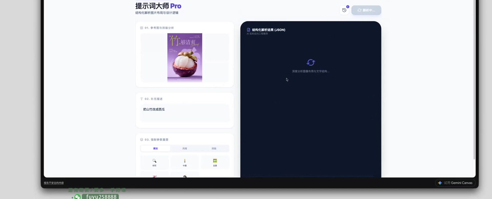
图29｜课程展示了参考图与提示词处理的小工具界面。做自己的工具时，先把一次输入到一次结果跑通，再考虑更多功能。 来源：第七课中 08:24。
你现在可以按这条路线学
第一次：用第1—3章完成一张改图，保存原图、提示词、结果。第二次：用第5—6章做一张海报，校对文字与产品。第三次：用第8—10章做一小段视频，必须完整播放检查。之后再进入人物剧情、批量工作流和Skill。
每次只带走一个已完成的小成果，比一下搭很大工作流更容易判断自己真正学会了什么。
课程回看：第二课后；第三课前；第七课中后；第八课后60:54。
↑ 返回目录
没有匹配内容，请换个词。